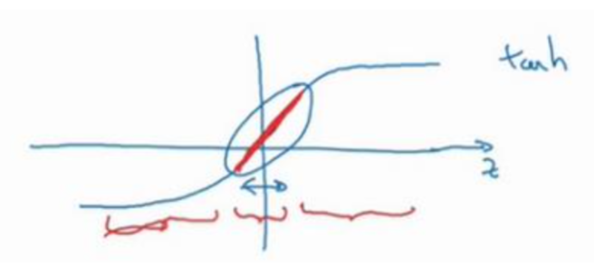

第一周
1.1 训练,验证,测试集
1.训练,验证,测试集 数据一定需要同分布
2.训练,验证,测试集 能够更好的衡量偏差和方差
1.2&1.3 偏差,方差(Bias/Variance)
1.偏差,方差最终的值都是基于人眼的,如果人眼误差也比较高的话,那么训练测试误差比较高也比较正常
2.训练集,测试集数据来自同分布
3.高方差可以解释为：拟合了数据集中的错误样本和中间的一些活跃数据
4.首先看偏差，偏差可以接受后，然后评估下验证集的性能来评估方差
5.一般可以根据训练，测试cost曲线来判断高偏差或者高方差,具体可以参考我github:正则化以及偏差方差检测
1.4&1.5 正则化
1.解决高方差一般有两种方法：一个是正则化，另外是准备更多的数据
2.L2正则化有时候也称为”权重衰减”，因为在用梯度下降计算参数的时候会在前面乘以小于1的数值
3.疑问：为什么很少使用L2做正则化
3.为什么能防止过拟合？(过拟合的本质就是参数过多，参数过大，维数过高)
- a.直观上理解当lambda足够大的时候，权重矩阵w接近于0，就把很多隐藏单元给消除了一样
- b.sigmoid,tanh激活函数的曲线可以发现，当x值在0附件的时候，曲线接近于直线，呈现直线的性质，并不是非直线
1.6&1.7 正则化(Dropout)
1.为了不影响Z[4]的期望值，我们需要用Z[4]a[3]/0.8来修正或弥补我们所需要的那20%
2.在测试阶段不能用dropout，因为我们不需要在测试阶段结果是随机的
3.直观理解Dropout和L2正则比较像
4.不能只依赖任何一个特征，因为都有可能被删除
5.根据过拟合的程度设置keep-prob的值，比如W[1]：7x3，W[2]：7x7,W[3]：7x3,所以W[2]层参数最多，可以设置keep-prob稍小一些，比如0.7，第一层可以设置为1，第一层不应该dropout。
6.过拟合才用Dropout方法，CV上通常没有足够多的数据，所以经常会用到
7.Dropout缺点：使代价函数J不再被明确定义，个人理解因为中间的神经元不确定是否被dropout，所以每次都神经元个数什么的都不一样
1.8 其他正则化方法
1.数据扩展(通过旋转，缩放，裁剪等)
2.early stoping
- 为什么能工作： 因为随机初始的w值都是比较小的，在刚开始训练的时候也不会很大，在后面迭代次数多的时候，w值就会比较大了，这就会使Loss比较大，这个时候stoping是比较好的
- 缺点: 如果提早停止了梯度下降，也就停止了J的继续优化，不能得到更小的代价函数J
- 与正则化lambda比较: lambda会尝试多轮的值，进行选择
1.9 归一化输入
1.标准化:零均值，归一化方差
2.为什么能归一化效果更好
- a.从Loss效果图分析： 归一化后数据更均匀，可以从任何一点入手进行GD迭代，否则曲线就比较凌乱
- b.从sigmoid或者tanh的曲线图分析： 归一化后区间在0附件的时候，梯度变化最大的

3.不用Normalize： 如果数据本身就处于相似范围，比如已经是1–2，或者0–1，区别不大：1–100
1.10 梯度消失或爆炸
1.这里只讨论了激活函数的指数级数增长或下降，但它也适用于L相关的导数或者梯度问题，比如另一篇文章梯度问题就是讨论的梯度指数问题
2.见另一篇梯度问题
1.11 神经网络权重初始化
见权重初始化练习：Initialization
In general, initializing all the weights to zero results in the network failing to break symmetry. This means that every neuron in each layer will learn the same thing
初始化参数全部为0的时候，每一层的梯度变化的一样的，有就是每一层学习到的是一样的，就不会有比较好的结果
The cost starts very high. This is because with large random-valued weights, the last activation (sigmoid) outputs results that are very close to 0 or 1 for some examples, and when it gets that example wrong it incurs a very high loss for that example. Indeed, when log(a[3])=log(0)log(a[3])=log(0) , the loss goes to infinity.
Poor initialization can lead to vanishing/exploding gradients, which also slows down the optimization algorithm.
If you train this network longer you will see better results, but initializing with overly large random numbers slows down the optimization.
当随机初始值比较大的时候，最后的输出sigmoid就是0或者1，这个时候如果碰见是0，那么计算lost的时候log(0)就是无限大，所以第一次迭代 Cost after iteration 0: inf
初始化参数过大会使开始训练的时候梯度下降得比较慢，Loss比较大，迭代会比较慢，当然最后也会收敛
Different initializations lead to different results
Random initialization is used to break symmetry and make sure different hidden units can learn different things
Don’t intialize to values that are too large
He initialization works well for networks with ReLU activations.
1.12&1.13 梯度的数值逼近及注意项
1.双边误差比单边误差小
2.误差值如果小于10−7是比较安全的，如果大于10−5就需要多注意下，如果大于10−3那么应该是有bug
3.如果J包含了正则项，那么求梯度D的时候也一定要包含正则项，感觉这个不用担心，因为有正则项的J，用数学公式求梯度函数一定会有正则项
4.Dropout和梯度逼近不能同时使用，个人理解是因为梯度逼近是对最终的真实的J做的梯度逼近，而Dropout国产中个的J′去掉了多个神经元并不是真实的J
5.参考NeuralNetwork中的梯度的数值逼近计算